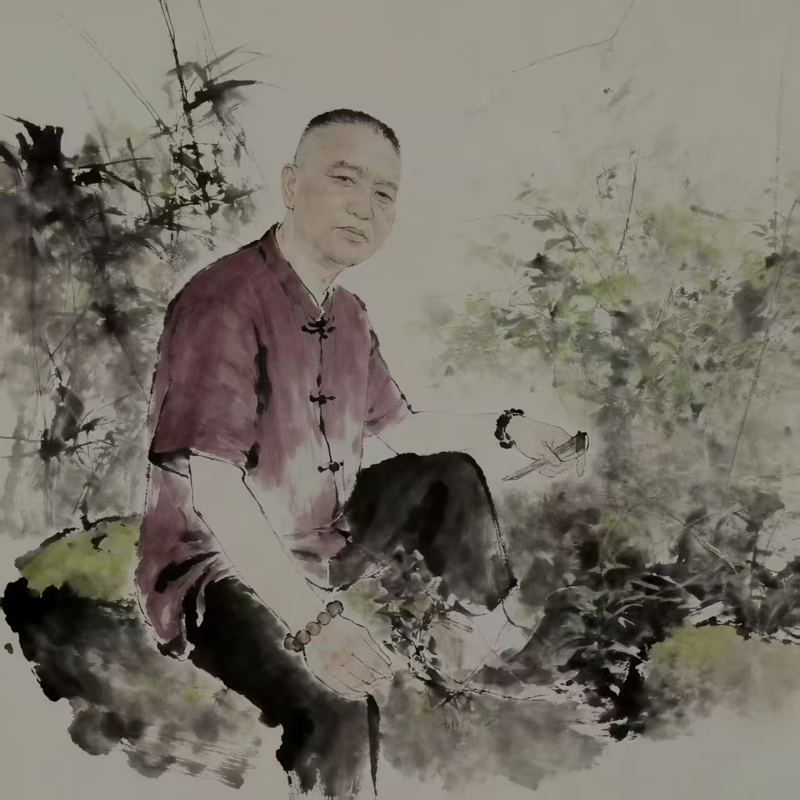
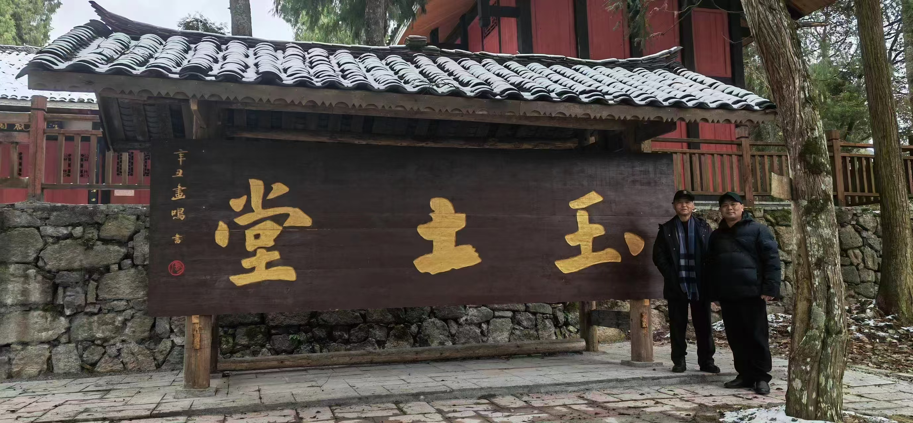
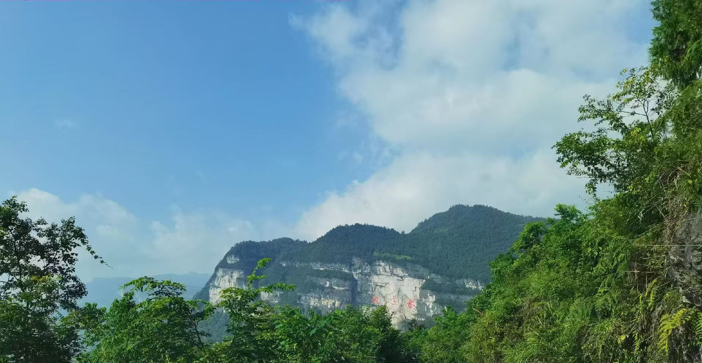
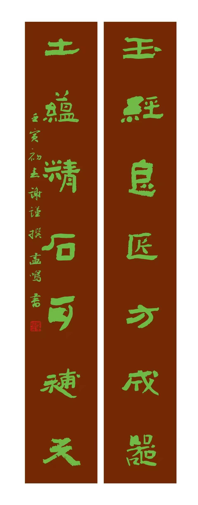

黔北多山，山孕土，土藏玉，玉凝气，气成文脉。以藏玉土，是天地不言的藏纳；玉土堂，是文人守心的堂奥；张画鸣先生以笔墨为引，将这一脉温润与苍劲，镌入九道水的摩崖石壁，让山、土、玉、书、石，在此浑然合一。
土为万物之基，玉为山川之精。古人云“藏玉于土，蕴德于怀”，黔北的红壤与青石间，本就藏着千年未散的灵秀。玉不琢不成器，土不厚不载物，以藏玉土，藏的是璞玉浑金的本真，藏的是静水流深的修为。这一方水土，不事张扬，却以温润滋养草木，以厚重托举峰峦，恰如文人笔下的留白，墨色未浓，气韵已生。

玉土堂便立于此间，以土为基，以玉为魂，以书画为心灯。堂号藏意，是藏玉于土的谦抑，亦是琢玉成器的坚守。张画鸣先生耽于笔墨数十载，从警营到书斋，从案头尺素到壁立千仞，始终守着玉土堂的静气。他的书法，笔力沉雄如黔北山石，线条温润如涧中璞玉，起笔藏锋如土纳玉，收笔劲健如玉破石，一画一墨，皆映着玉与土的相生相成。画鸣先生常言，书画非炫技，乃以笔为锄，以墨为土，耕心种玉，让文字与线条，长成有根有魂的风景。

大娄山下，九道水蜿蜒而来，林泉叠翠，崖壁如屏。麻湾洞飞瀑垂练，崖石经千年水濯，肌理如璞，正宜镌文留痕。张画鸣先生挥毫题写“九道水”三字，字大如斗，笔势开张，藏山之雄、水之秀、土之厚、玉之润。一笔入石，便与崖壁共生，墨痕化金石，笔墨成永恒。这摩崖石刻，不是简单的题字，是玉土堂文脉的延伸，是以藏玉土哲思的具象——玉藏于土，文镌于石，山水无言，笔墨有声。

立于崖下仰望，石壁苍苍，字迹巍巍。风过林梢，如笔锋扫过素笺；泉鸣深涧，如墨汁渗入宣麻。九道水的灵秀，因石刻而有了文心；玉土堂的坚守，因山水而有了归处；以藏玉土的谦德，因笔墨而有了传承。土不矜其厚，玉不炫其光，书不逞其势，石不扬其坚，四者相融，便是黔北文脉最动人的模样。
玉藏于土，千年不腐；文镌于石，百世流芳。玉土堂的灯，依旧明亮；画鸣先生的笔，依旧沉实；九道水的崖，依旧矗立。以土藏玉，以书镌山，以心传文，这一方水土的温润与风骨，便在笔墨与金石间，生生不息。
